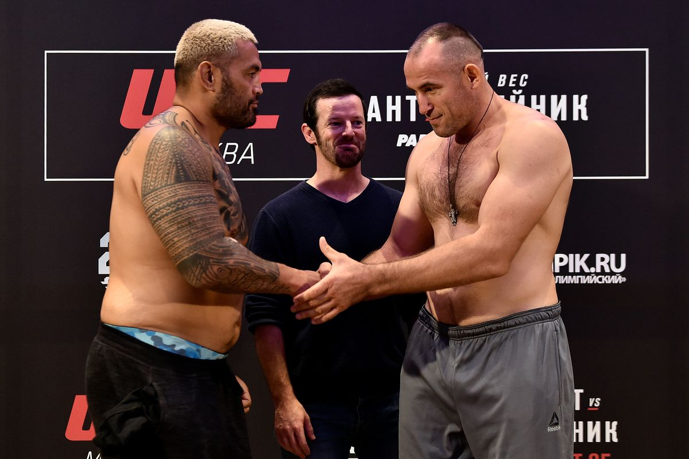

Футбол: Манчестер Сити победил Барселону
В последнем матче Лиги Чемпионов "Манчестер Сити" одержал победу над "Барселоной" со счетом 3:1. Голы забили Кевин Де Брюйне, Серхио Агуэро и Рахим Стерлинг.
Самые яркие моменты матчей, интервью с игроками и истории успеха.
Лучшие новости недели, прогнозы и аналитика, трансферы и новички.
В последнем матче Лиги Чемпионов "Манчестер Сити" одержал победу над "Барселоной" со счетом 3:1. Голы забили Кевин Де Брюйне, Серхио Агуэро и Рахим Стерлинг.
В НБА "Лос-Анджелес Лейкерс" одержал победу над "Бостон Селтикс" со счетом 102:96. Леброн Джеймс набрал 35 очков, что помогло команде одержать победу.
В матче ЮФС "Москва" обыграла "Санкт-Петербург" со счетом 28:21. Бойцы продемонстрировали невероятное мастерство и выносливость.
Подробная статистика и аналитика игр.
Обсуждения, комментарии и дискуссии от фанатов.
Истории ключевых моментов и исторических событий в спорте.
Сборная России завоевала золотые медали на Олимпийских играх 2012 года, показав невероятные результаты в различных дисциплинах.
Михаэль Шумахер стал легендой Формулы-1, выиграв множество чемпионатов и установив рекорды.
Предложения по ставкам на различные спортивные события, статистика ставок и советы.
Коэффициенты и предложения: 2.0 на победу Манчестер Сити, 3.5 на ничью, 4.0 на победу Барселоны.
Коэффициенты и предложения: 1.8 на победу Лейкерс, 2.2 на победу Селтикс.
Игры с демо-ставками.
Попробуйте свои силы в популярной карточной игре.
Сделайте ставку и попробуйте угадать, где остановится шарик.
Пользователь 1
Этот матч был просто невероятным! Команда показала себя с лучшей стороны.
Пользователь 2
Какое удивительное выступление! Леброн Джеймс снова доказал, что он великий игрок.